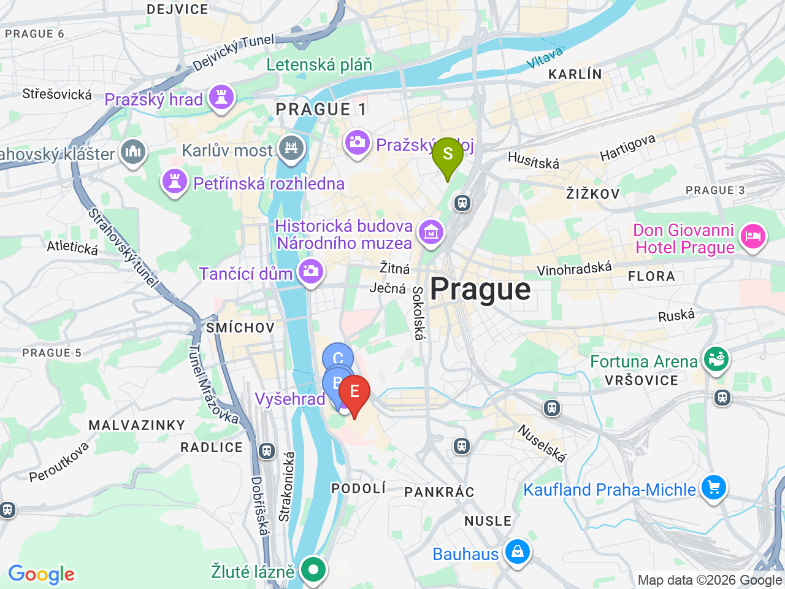
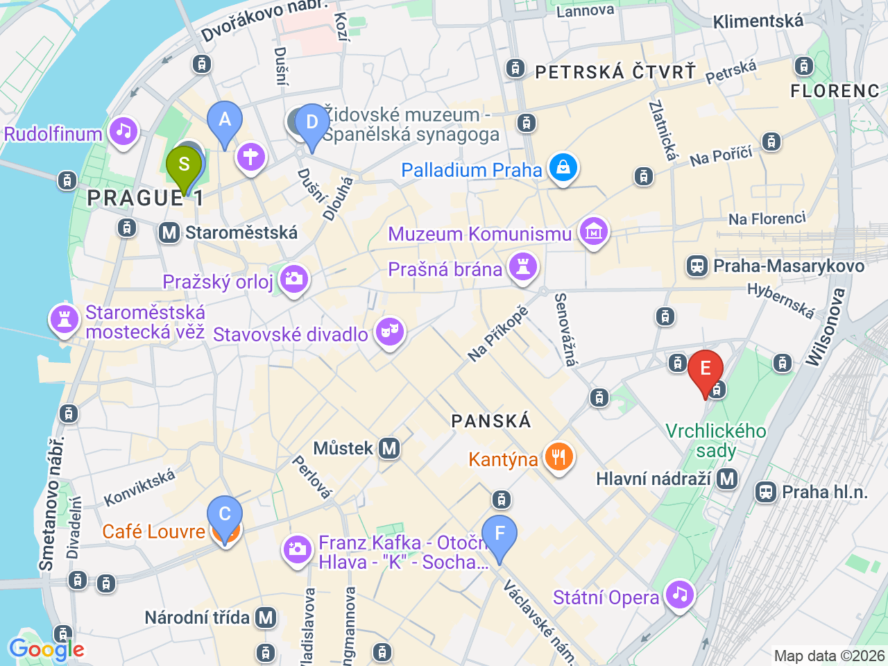

Day 26 · 2026-09-10（四）
捷克・布拉格/CK小鎮 Day 3/5
布拉格第三天：南邊的維謝赫拉德要塞 & 猶太區
上午遠離人潮的第二座城堡，下午走進猶太區的沉重歷史，晚上瓦茨拉夫廣場收尾
💱捷克幣匯率參考（查詢當日）：1 CZK ≈ 0.041 EUR（約 100 CZK ≈ 4.1 EUR）；1 CZK ≈ 1.52 TWD（約 100 CZK ≈ 152 TWD）。實際匯率會隨市場波動，僅供參考，換匯/刷卡以當下實際匯率為準
⏰猶太區（Josefov）博物館聯票逢週六與猶太節日不開放，出發前確認9/10當天是否正常營業；Petřín 纜車先前曾因整修暫停，若想上去請當天確認是否已恢復
Vyšehrad 景點區域

Josefov 猶太區（含飯店）

彈性探索景點DAY 26
| 地點 | 地點 (英文) | 預計停留(分鐘) | 價格 | 備註 |
|---|---|---|---|---|
| Vyšehrad 城牆 & 眺望點 | AVyšehrad, Prague | 約45分鐘 | 免費 | 布拉格「第二座城堡」，遊客少很多，可俯瞰伏爾塔瓦河 |
| Vyšehrad 墓園（Slavín） | BVyšehrad Cemetery, Prague | 約30分鐘 | 免費 | 德弗札克、史麥塔納等捷克名人長眠於此 |
| 聖彼得聖保羅教堂 | CBasilica of St Peter and St Paul, Prague | 約20分鐘 | 約 €5 | 新藝術風格內裝很精緻，不進場外觀也很美 |
| 午餐：U Kroka | DU Kroka, Prague | 約60分鐘 | 見上方三餐資訊 | Vyšehrad 坡道旁 |
| 猶太區聯票（老猶太墓園＋各會堂） | FOld Jewish Cemetery, Prague | 約120-150分鐘 | CZK 600（含Old-New Synagogue另加CZK 200） | 建議預留至少2小時，週六與猶太節日不開放 |
| 舊新會堂 | GOld-New Synagogue, Prague | 約20分鐘 | 另加CZK 200 | 歐洲現存最古老的活躍猶太會堂 |
| 品克斯會堂 | HPinkas Synagogue, Prague | 約20分鐘 | 含在聯票內 | 牆上刻滿納粹大屠殺罹難者姓名，很震撼 |
| Café Louvre | ICafé Louvre, Národní 22, Prague | 約60分鐘 | 約 CZK 200-350／人 | 1902年開業，卡夫卡與愛因斯坦常客，猶太區看完沉重歷史後適合來這裡坐著喝咖啡緩衝 |
| 晚餐：Kolkovna V Kolkovně | JKolkovna V Kolkovně, Prague | 約60分鐘 | 見上方三餐資訊 | 猶太區步行範圍 |
| 瓦茨拉夫廣場 | KVáclavské náměstí, Prague | 約20分鐘 | 免費 | 飯店正對面，晚上散步收尾很方便 |
| （體力許可再加）Petřín 纜車 & 觀景塔 | LPetřín Lookout Tower, Prague | 約60分鐘 | 纜車CZK60（或用交通票）＋觀景塔CZK220起 | 迷你艾菲爾鐵塔，可看夕陽，出發前確認纜車是否已恢復營運 |
每日三餐
早餐
飯店早餐Franz BY ZEITRAUM
午餐
U KrokaU Kroka約 CZK 200-350／人
📍 Vyšehrad, PragueVyšehrad 坡道旁的家庭式小館，本地人多於觀光客，svíčková、guláš、烤鴨都推薦；備案：Vyšehrad 園區內的小咖啡攤簡單解決也可以
晚餐
Kolkovna V KolkovněKolkovna V Kolkovně約 CZK 200-350／人
📍 V Kolkovně 8, Prague猶太區步行範圍內、老城廣場旁，連鎖但品質穩定；備案：回到瓦茨拉夫廣場一帶找餐廳，選擇很多，飯店就在旁邊方便收尾
住宿資訊
Franz BY ZEITRAUM
📍 Opletalova 1683/41, Prague